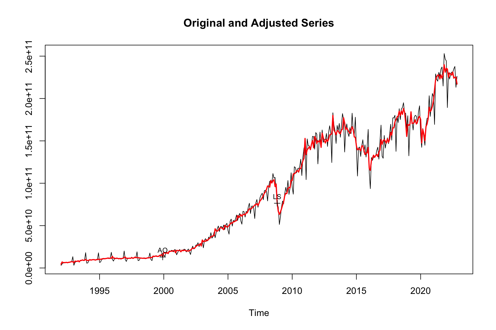

m <- seas(AirPassengers)
summary(m)
#>
#> Call:
#> seas(x = AirPassengers)
#>
#> Coefficients:
#> Estimate Std. Error z value Pr(>|z|)
#> Weekday -0.0029497 0.0005232 -5.638 1.72e-08 ***
#> Easter[1] 0.0177674 0.0071580 2.482 0.0131 *
#> AO1951.May 0.1001558 0.0204387 4.900 9.57e-07 ***
#> MA-Nonseasonal-01 0.1156204 0.0858588 1.347 0.1781
#> MA-Seasonal-12 0.4973600 0.0774677 6.420 1.36e-10 ***
#> ---
#> Signif. codes: 0 '***' 0.001 '**' 0.01 '*' 0.05 '.' 0.1 ' ' 1
#>
#> SEATS adj. ARIMA: (0 1 1)(0 1 1) Obs.: 144 Transform: log
#> AICc: 947.3, BIC: 963.9 QS (no seasonality in final): 0
#> Box-Ljung (no autocorr.): 26.65 Shapiro (normality): 0.99088 Irregular holidays
You are reading an early draft of Seasonal Adjustment in R. This chapter should be readable but needs polishing.
It is part of the course materials intended for Mar 24, 2023.
8.1 Why should we adjust for holiday effects
Easter is based on the lunar cycles of the Jewish calendar. As such, the Easter dates change from year to year. Depending on the year, Easter is either in March or April. In quarterly data, Easter fall either in the first or in the second quarter.
For the interpretation of many time series, this constitutes problem. Retails sales, for example, are usually reduced during the Easter holiday. If March values are compared between years, their interpretation depends on the exact day of Easter. If Easter falls into March, we would expect lower retail sales in this month. Conversely, if it falls into April we would expect April numbers to be lower.
| Variable | Description |
|---|---|
const |
Trend constant regression variable to allow for a nonzero overall mean for the differenced data. |
seasonal |
Fixed seasonal effects parameterized via s−1 seasonal contrast variables. The resulting variables allow for month-to-month (or quarter-to-quarter, etc.) differences in level, but have no net effect on overall level. Cannot be used with sincos or in models with seasonal differencing except as a partial change of regime variable. |
sincos[ ] |
Fixed seasonal effects (for s = seasonal period) parameterized via trigonometric regression variables of the form sin(ωjt) and cos(ωjt) at seasonal frequencies ωj = (2πj/s) for 1 ≤ j ≤ s/2 (dropping sin(ωjt) ≡ 0 for j = s/2 for s even). Each frequency to be included must be specified, i.e., for monthly series sincos[1, 2, 3, 4, 5, 6] includes all seasonal frequencies while sincos[1, 2, 3] includes only the first three. Cannot be used with seasonal or in models with seasonal differencing. |
td |
Estimate monthly (or quarterly) flow trading-day effects by including the tdnolpyear variables in the model, and handle leap-year effects either by re-scaling (for transformed series) or by including the lpyear regression variable (for untransformed series). Can only be used for monthly or quarterly series, and cannot be used with tdnolpyear, td1coef, td1nolpyear, lpyear, lom, loq, tdstock, or tdstock1coef. If td is specified, do not specify transform.adjust = "lpyear" or transform.adjust = "lom". |
tdnolpyear |
Include the six day-of-week contrast variables (monthly and quarterly flow series only): (no. of Mondays) − (no. of Sundays), …, (no. of Saturdays) − (no. of Sundays). Cannot be used with td, td1coef, td1nolpyear, tdstock, or tdstock1coef. |
td1coef |
Estimate monthly (or quarterly) flow trading-day effects by including the td1nolpyear variable (see below) in the model, and handle leap-year effects either by re-scaling (for transformed series) or by including the lpyear regression variable (for untransformed series). Can only be used for monthly or quarterly series, and cannot be used with td, tdnolpyear, td1nolpyear, lpyear, lom, loq, tdstock, or tdstock1coef. |
td1nolpyear |
Include the weekday-weekend contrast variable (monthly and quarterly flow series only): (no. of weekdays) −52 (no. of Saturdays and Sundays). |
lpyear |
Include a contrast variable for leap-year (monthly and quarterly flow series only): 0.75 for leap-year Februaries (first quarters), -0.25 for non-leap year Februaries (first quarters), and 0.0 otherwise. |
lom |
Include length-of-month as a regression variable. If lom is requested for a quarterly series, X-13ARIMA-SEATS uses loq instead. Requesting lom when s is neither 12 nor 4 produces an error. |
loq |
Include length-of-quarter as a regression variable. If loq is requested for a monthly series, X-13ARIMA-SEATS uses lom instead. |
tdstock[w] |
Estimate day-of-week effects for inventories or other stocks reported for the w-th day of each month. The value w must be supplied and can range from 1 to 31. For any month of length less than the specified w, the tdstock variables are measured as of the end of the month. Use tdstock[31] for end-of-month stock series. |
tdstock1coef[w] |
Estimate a constrained stock trading day effect for inventories or other stocks reported for the w-th day of each month. The value w must be supplied and can range from 1 to 31. For any month of length less than the specified w, the tdstock1coef variables are measured as of the end of the month. Use tdstock1coef[31] for end-of-month stock series. |
easter[w] |
Easter holiday regression variable for monthly or quarterly flow data that assumes the level of daily activity changes on the w-th day before Easter and remains at the new level through the day before Easter. This value w must be supplied and can range from 1 to 25. A user can also specify an easter[0] regression variable, which assumes the daily level of activity level changes only on Easter Sunday. To estimate complex effects, several of these variables, differing in their choices of w, can be specified. |
labor[w] |
Labor Day holiday regression variable (monthly flow data only) that assumes the level of daily activity changes on the w-th day before Labor Day and remains at the new level until the day before Labor Day. The value w must be supplied and can range from 1 to 25. |
thank[w] |
Thanksgiving holiday regression variable (monthly flow data only) that assumes the level of daily activity changes on the w-th day before or after Thanksgiving and remains at the new level until December 24. The value w must be supplied and can range from −8 to 17. Values of w < 0 indicate a number of days after Thanksgiving; values of w > 0 indicate a number of days before Thanksgiving. |
sceaster[w] |
Statistics Canada Easter holiday regression variable (monthly or quarterly flow data only) assumes that the level of daily activity changes on the (w − 1)-th day before Easter and remains at the new level through Easter day. The value w must be supplied and can range from 1 to 24. To estimate complex effects, several of these variables, differing in their choices of w, can be specified. |
easterstock[w] |
End of month stock Easter holiday regression variable for monthly or quarterly stock data. This regressor is generated from the easter[w] regressors. The value w must be supplied and can range from 1 to 25. To estimate complex effects, several of these variables, differing in their choices of w, can be specified. |
aodate |
Additive (point) outlier variable, AO, for the given date or observation number. For series with associated dates, AOs are specified as aodate. For monthly series this is aoyear.month (e.g., ao1985.jul or ao1985.7), while for quarterly series this is aoyear.quarter (e.g., ao1985.1 for an AO in the first quarter of 1985), and for annual series this is aoyear (e.g., ao1922). For series without associated dates, AOs are specified as aoobservation number, e.g., ao50 for an AO at observation 50. More than one AO may be specified. All specified outlier dates must occur within the series. |
aosdate-date |
Specifies a sequence of additive (point) outlier variables, AO, for the given range of dates or observation numbers. Sequence AO outlers begin and end on a given date, e.g., aos2008.apr-2008.oct. More than one AOS may be specified, although the spans should not overlap. All specified outlier dates must occur within the series. |
lsdate |
Regression variable for a constant level shift (in the transformed series) beginning on the given date, e.g., "ls1990.oct" for a level shift beginning in October 1990. More than one level shift may be specified. Dates are specified as for AOs and the same restrictions apply with one addition: level shifts cannot be specified to occur on the start date of the series (or of the span specified by the span argument of the series spec). |
lssdate-date |
Specifies a sequence of level shift outlier variable, LS, for the given range of dates or observation numbers. Sequence LS outlers begin and end on a given date, e.g., "lss2008.jun-2008.nov". More than one LSS may be specified, though the spans should not overlap. All specified outlier dates must occur within the series. |
tcdate |
Regression variable for a temporary level change (in the transformed series) beginning on the given date, e.g., "tc1990.oct" for a temporary change beginning in October 1990. More than one temporary change may be specified. Dates are specified as for AOs, and the same restrictions apply. |
sodate |
Regression variable for a seasonal outlier (in the transformed series) beginning on the given date, e.g., "so1988.mar" for a seasonal outlier beginning in March 1988. More than one seasonal outlier change may be specified. Dates are specified as for AOs, and the same restrictions apply with one addition: seasonal level shifts cannot be specified to occur on the start date of the series (or of the span specified by the span argument of the series spec). |
rpdate-date |
Ramp effect that begins and ends on the given dates, e.g., "rp1988.apr-1990.oct". The rate of change during the ramp for this regression variable is constant. More than one ramp effect may be specified. All dates of the ramps must occur within the series. Ramps can overlap other ramps, TLs, AOs, and level shifts. |
qddate-date |
Quadratic ramp effect that begins and ends on the given dates, e.g., "qd1998.may-2000.aug". The rate of change during the ramp for this regression variable is decreasing in magnitude. More than one quadratic ramp effect may be specified. All dates of the ramps must occur within the series. Quadratic ramps can overlap other ramps, TLs, AOs, and level shifts. |
qidate-date |
Quadratic ramp effect that begins and ends on the given dates, e.g., "qi2010.apr-2011.oct". The rate of change during the ramp for this regression variable is increasing in magnitude. More than one quadratic ramp effect may be specified. All dates of the ramps must occur within the series. Quadratic ramps can overlap other ramps, TLs, AOs, and level shifts. |
tldate-date |
Temporary level change effect which begins and ends on the given dates, e.g., "tl1983.jul-1984.nov". More than one temporary level shift effect may be specified. All dates of the temporary level shift regressor must occur within the series. |
8.2 Automated Adjustment
By default, seas() calls the automated routines to detect Easter effects in a series. For example, the default call detects an Easter effect with a length of one in the air passengers time series:
X-13 tests various lengths of an Easter effect and picks the one model with the lowest AICc. Easter[1] indicates that a length of one day has been chosen. I.e., the Easter holiday period is thought to start on Easter day and last for only one day. Alternatively, Easter[8] starts at Easter day and lasts for the eight subsequent days. If we want to enforce an eight day Easter holiday, we can specify the call as follows:
m_easter_8 <- seas(AirPassengers, regression.variables = "easter[8]")
summary(m_easter_8)
#>
#> Call:
#> seas(x = AirPassengers, regression.variables = "easter[8]")
#>
#> Coefficients:
#> Estimate Std. Error z value Pr(>|z|)
#> Weekday -0.0028967 0.0005289 -5.477 4.33e-08 ***
#> Easter[8] 0.0158629 0.0074253 2.136 0.0327 *
#> AO1951.May 0.1008171 0.0206437 4.884 1.04e-06 ***
#> MA-Nonseasonal-01 0.1215690 0.0858086 1.417 0.1566
#> MA-Seasonal-12 0.5036477 0.0770917 6.533 6.44e-11 ***
#> ---
#> Signif. codes: 0 '***' 0.001 '**' 0.01 '*' 0.05 '.' 0.1 ' ' 1
#>
#> SEATS adj. ARIMA: (0 1 1)(0 1 1) Obs.: 144 Transform: log
#> AICc: 948.8, BIC: 965.4 QS (no seasonality in final): 0
#> Box-Ljung (no autocorr.): 26.4 Shapiro (normality): 0.9895Not surprisingly, the 8 day Easter model has a lower AICc than the one day model. This is why the one day model has been chosen in the beginning.
8.3 Case Study: Chinese New Year
The Lunar New Year is the most important holiday in China and many other Asian countries. Traditionally, the holiday starts on Lunar New Year’s Eve, and lasts to the Lantern Festival on the 15th day of the first month of the lunisolar calendar. The Chinese New Year is celebrated either in January or in February of the Gregorian calendar.
Because of its importance, Chinese New Year seriously distorts monthly time series, which are usually reported according to the Gregorian calendar. Unlike Easter, Chinese New Year does not affect quarterly time series, as it always falls in the first quarter.
X-13-ARIMA-SEATS has a built-in adjustment procedure for Easter holiday, but not for Chinese New Year. However, all packages allow for the inclusion of user-defined variables, and the Chinese New Year can be modeled as such.
With the R package seasonal, generating and including such a series is easy. We will use it in the following to seasonally adjust and remove Chinese New Year effects from the nominal dollar value of imports to China. seasonal is an interface to X-13ARIMA-SEATS; for more information and installation details, see here.
8.3.1 Imports of Goods to China
Chinese imports are included as an example series in seasonal, both with and without the official seasonal adjustment.
The series has a very different seasonal pattern before 2000, we focus on the later period. (Adjusting the whole series in one step is possible, but for good results one should manually model the seasonal break.)
imp_cn_2000 <- ts_span(imp_cn, start = 2000)ts_dygraphs() works similar to ts_plot(), but allows for zooming:
ts_dygraphs(imp_cn_2000)
How to read data from FRED into R
{fredr} provides access to the Federal Reserve of Economic Data (FRED), provided by the Federal Reserve Bank of St. Louis. To use fredr and the FRED API in general, you must first obtain a FRED API key. Have a look at the Documentation for details.
The core function in this package is fredr(), which fetches observations for a FRED series.
We can use purrr::map_dfr() to download multiple series at once:
A bit of tidying:
imp_cn_tidy <-
imp_cn_raw %>%
select(time = date, id = series_id, value) %>%
mutate(id = recode(
id,
XTIMVA01CNM667S = "sa",
XTIMVA01CNM667N = "nsa"
))Use the tsbox package to convert the data frame into ts objects.
Both time series are included in the book package.
library(seasonalbook)
imp_cn_sa
imp_cnseasonal includes the genhol() function, a R version of the equally named software utility by the U.S. Census Bureau. Using the dates of the Chinese New Year as an input, it produces a time series with the deviations from the monthly means. Here we are assuming that the holiday starts on New Year’s Eve and lasts for one week.
reg_cny <- genhol(cny, start = -1, end = 6, center = "calendar")
tsbox::ts_dygraphs(reg_cny)8.3.2 Including user-defined regressors
The time series reg_cny can be included in the main seasonal adjustment. The automated procedures of X-13ARIMA-SEATS can be applied to the imp series in the following way:
m1 <- seas(
imp_cn,
xreg = reg_cny,
regression.usertype = "holiday",
x11 = list()
)
summary(m1)
#>
#> Call:
#> seas(x = imp_cn, xreg = reg_cny, regression.usertype = "holiday",
#> x11 = list())
#>
#> Coefficients:
#> Estimate Std. Error z value Pr(>|z|)
#> xreg -0.1765307 0.0126609 -13.943 < 2e-16 ***
#> Weekday 0.0074007 0.0009128 8.108 5.16e-16 ***
#> AO1999.Dec -0.2067229 0.0505932 -4.086 4.39e-05 ***
#> LS2008.Nov -0.3893238 0.0529569 -7.352 1.96e-13 ***
#> MA-Nonseasonal-01 0.4519761 0.0471994 9.576 < 2e-16 ***
#> MA-Seasonal-12 0.3140128 0.0486579 6.453 1.09e-10 ***
#> ---
#> Signif. codes: 0 '***' 0.001 '**' 0.01 '*' 0.05 '.' 0.1 ' ' 1
#>
#> X11 adj. ARIMA: (0 1 1)(0 1 1) Obs.: 371 Transform: log
#> AICc: 1.688e+04, BIC: 1.691e+04 QS (no seasonality in final): 0
#> Box-Ljung (no autocorr.): 26.19 Shapiro (normality): 0.9706 ***
plot(m1)With xreg, arbitrary user-defined regressors can be included, regression.usertype = “holiday” ensures that the final series does not include the regression effect. We also have chosen X11 as the decomposition method.
Unsurprisingly, the summary reveals a highly significant Chinese New Year effect. As the automatic model has been estimated on the logarithmic series, the coefficient of -0.17 indicates that New Year in 2023 will lower imports in January, by approximately 0.74 * 17 ~ 13% (compared to average January), and increase it by the same amount in February. The automatic procedure has also detected weekday effects and a level shift during the financial crisis.
8.3.3 Multiple regressors
We can do even better by using more than one user-defined regressors, one for the pre-New-Year period and one for the post-New-Year period:
pre_cny <- genhol(cny, start = -6, end = -1, frequency = 12, center = "calendar")
post_cny <- genhol(cny, start = 0, end = 6, frequency = 12, center = "calendar")
m2 <- seas(
imp_cn,
xreg = ts_c(pre_cny, post_cny),
regression.usertype = "holiday",
x11 = list()
)
summary(m2)
#>
#> Call:
#> seas(x = imp_cn, xreg = ts_c(pre_cny, post_cny), regression.usertype = "holiday",
#> x11 = list())
#>
#> Coefficients:
#> Estimate Std. Error z value Pr(>|z|)
#> xreg1 0.0086369 0.0151880 0.569 0.57
#> xreg2 -0.1867300 0.0185745 -10.053 < 2e-16 ***
#> Weekday 0.0073883 0.0009075 8.141 3.91e-16 ***
#> AO1999.Dec -0.2067477 0.0503232 -4.108 3.98e-05 ***
#> LS2008.Nov -0.3883634 0.0528389 -7.350 1.98e-13 ***
#> MA-Nonseasonal-01 0.4485043 0.0472357 9.495 < 2e-16 ***
#> MA-Seasonal-12 0.3132536 0.0486452 6.440 1.20e-10 ***
#> ---
#> Signif. codes: 0 '***' 0.001 '**' 0.01 '*' 0.05 '.' 0.1 ' ' 1
#>
#> X11 adj. ARIMA: (0 1 1)(0 1 1) Obs.: 371 Transform: log
#> AICc: 1.688e+04, BIC: 1.691e+04 QS (no seasonality in final):0.00202
#> Box-Ljung (no autocorr.): 27.47 Shapiro (normality): 0.969 ***
plot(m2)
8.3.4 Compare with official adjustments
I haven’t done any research on how the officially seasonally adjusted rates are computed, but they seem very close to a default call to seas(). Our models (both m1, but especially m2), does a much better job of adjusting to Chinese New Year.
ts_dygraphs(
ts_c(
cny = ts_span(reg_cny * 1e11 + 1e11, start = 2000, end = 2024),
ts_pick(imp_cn_2000, "sa"),
final(seas(x = imp_cn, x11 = "")),
final(m2)
)
)